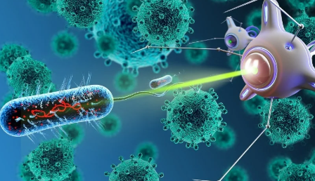
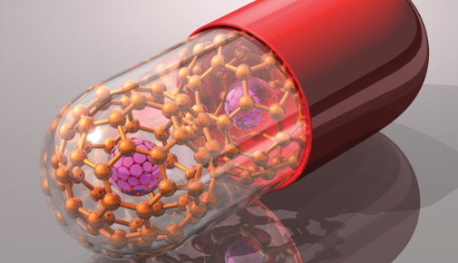
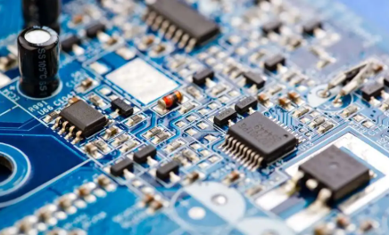
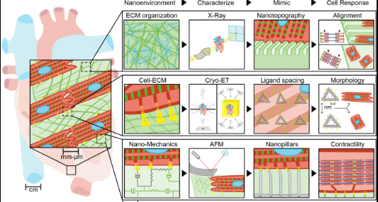
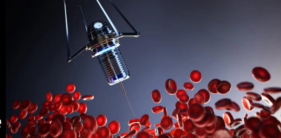

Revolutionizing Industries and Shaping the Future
Nanotechnology, which involves manipulating matter at the atomic and molecular scale (typically 1–100 nanometers), is transforming the way industries innovate and operate. From healthcare to electronics, its impact is far-reaching and rapidly expanding. The global nanotechnology market, valued at around $85 billion in 2022, is projected to surge to nearly $288 billion by 2030, driven by a strong CAGR of 16.8%. This explosive growth highlights nanotech’s potential to revolutionize products, processes, and future technologies across multiple sectors.
In healthcare, nanotechnology is unlocking breakthroughs that were once thought impossible. Targeted drug delivery using nanoparticles can boost efficiency by 40–60%, ensuring medicines act precisely where needed while minimizing side effects. By 2035, nano-robots are expected to revolutionize surgeries with unmatched precision, even enabling advanced tissue repair. Cancer treatments are also being transformed, with nanoparticle-based chemotherapy improving patient outcomes by nearly 30%. Beyond treatment, regenerative medicine is benefiting from nanotech scaffolds that support tissue repair and growth, potentially reducing the need for organ transplants in the future.
Nanotechnology is also driving major advancements in electronics and computing. The semiconductor industry, for example, is projected to soar to $1 trillion by 2030, fueled by nanotech innovations. Materials like graphene and carbon nanotubes, which are nearly 100 times faster than silicon, are set to supercharge artificial intelligence and next-generation computing. In consumer electronics, quantum dot displays are emerging as game changers, consuming 30% less energy while lasting twice as long as conventional LEDs. Additionally, nanotechnology is paving the way for wearable tech with flexible screens and ultra-thin batteries, making devices lighter, smarter, and more efficient.
Beyond healthcare and electronics, nanotechnology is playing a vital role in sustainability and environmental protection. Advanced nanomaterials can remove up to 99.9% of contaminants from water and air, ensuring cleaner resources. In pollution control, nanosponges can clean oil spills up to five times faster, while nanotech-based solutions are helping cut CO₂ emissions by nearly 30%. Renewable energy is also benefiting, with solar panels enhanced by nanotechnology achieving 20–25% higher efficiency, making green energy more accessible and impactful for the future.
Nanotechnology is also revolutionizing the field of space exploration by enabling stronger, smarter, and more resilient materials. Advanced nanomaterials can make spacecraft up to 35% lighter, significantly cutting launch costs while boosting efficiency. Self-healing coatings promise to extend spacecraft lifespans by automatically repairing minor damage, while specialized nanotech shields can block nearly 70% of harmful space radiation, protecting astronauts on long missions. Looking ahead, by 2040, these innovations are expected to play a crucial role in deep space travel and even aid ambitious goals like Mars colonization, making interplanetary exploration more feasible than ever before.
Nanotechnology is set to transform space exploration by introducing lighter, stronger, and more resilient materials. Spacecraft built with advanced nanomaterials can be up to 35% lighter, lowering launch costs and improving efficiency. Self-healing coatings could prolong spacecraft lifespans by repairing minor damage on their own, while nanotech-based shields offer protection by blocking nearly 70% of harmful space radiation. By 2040, these breakthroughs are expected to play a key role in deep space missions and could even support humanity’s ambitious goal of Mars colonization, bringing the dream of interplanetary travel closer to reality.
In conclusion, nanotechnology is poised to have a massive economic and scientific impact, with the market expected to surpass $280 billion by 2030 as it drives breakthroughs across healthcare, electronics, energy, and space exploration. However, with such powerful potential comes the need for ethical responsibility. Strong regulations, sustainable practices, and careful oversight will be essential to ensure that nanotech evolves safely, responsibly, and for the greater good of humanity.